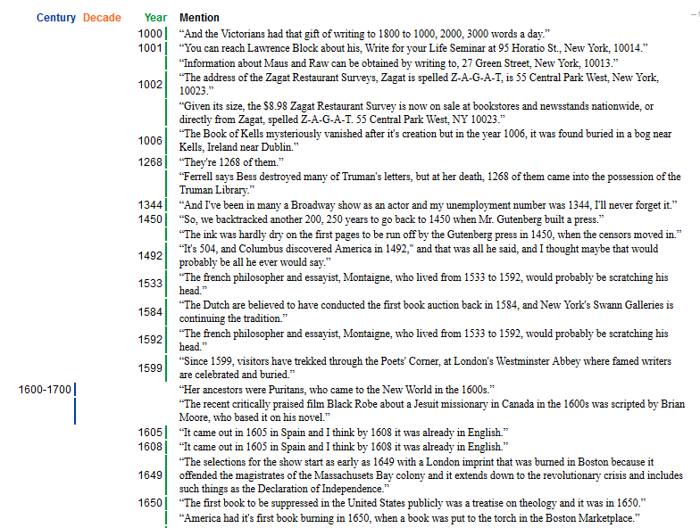
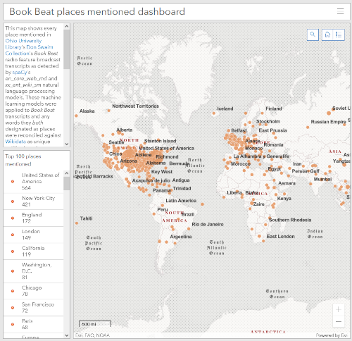
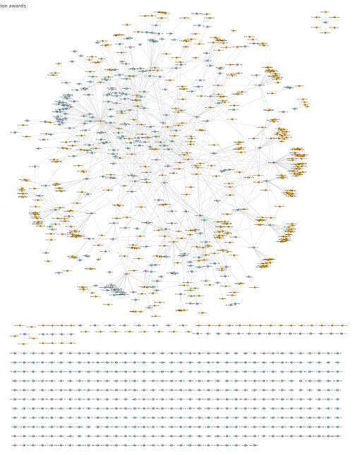

Item counts
- Sets of interviews and their derived Book Beat feature broadcasts
- Persons interviewed
- 30-60 minute interviews
- 3-5 minute Book Beat feature broadcasts transmitted by WCBS and nationally syndicated
Interview and broadcast dates
Book Beat was produced and broadcast from 1983-1993
Interviewee occupations
According to Wikidata, most of Don Swaim's interviewees are writers, like novelists, screenwriters and journalists.
Interviewee languages
All of Don Swaim's interviews are in English, but Wikidata reports that some of his interviewees have also written or speak other languages.
Interviewee genders
Wikidata reports that about 60% of Swaim's interviewees are male, 19% female and 22% unknown.
Dates mentioned in Book Beat features
See a table of every span of time mentioned in Book Beat as detected by a machine learning model (spaCy's en_core_web_md).
Places mentioned in Book Beat features
See an ArcGIS Dashboard of every place mentioned in Book Beat as detected by spaCy's machine learning models.
Interviewee awards
See a network graph connecting interviewees and awards Wikidata reports they have won.
Collection data
Download Don Swaim Collection metadata and transcripts for your own research.
🔬
- 📇 swaim-metadata.json
- 📝 book-beat-transcripts.zip
- 📝 interview-transcripts.zip
Wikidata queried 2020-07-17